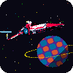

The source The whole firmware, open (GPL-3.0). Use the features in your own work: just credit No Man Sky FM in your README or video.O código O firmware inteiro, aberto (GPL-3.0). Use as funções no seu trabalho: só dê o crédito ao No Man Sky FM no README ou no vídeo.Real-life side quests My personal space to share the progress of my technology studies: learning synths, improvements and tests with No Man Sky FM, winampFM and FM1 Quest, and robotics prototypes with ESP32.Side quests da vida real Meu espaço pessoal para compartilhar o progresso dos meus estudos de tecnologia: aprendendo synth, melhorias e testes com o No Man Sky FM, o winampFM e o FM1 Quest, e protótipos de robótica com ESP32.Demos and updates Videos of No Man Sky FM, winampFM and FM1 Quest updates in action, development guides so more people can create with their own creativity, and some behind the scenes.Demonstrações e atualizações Vídeos das atualizações do No Man Sky FM, do winampFM e do FM1 Quest em ação, guias de desenvolvimento para mais gente criar com a própria criatividade, e alguns bastidores.

No Man Sky FM for your FM-1No Man Sky FM para o seu FM-1
A free firmware for the M-VAVE FM-1: a space adventure you play with two knobs while the other hand makes the music. Land on planets, mine, fight robots, warp between stars.Um firmware gratuito para o M-VAVE FM-1: uma aventura espacial que você joga com dois knobs enquanto a outra mão faz a música. Pouse em planetas, minere, enfrente robôs, salte entre estrelas.
No Man Sky FM v0.4 based on SLOOP 2.7.1baseado no SLOOP 2.7.1
0%
All the music in the video was made live on the FM-1, while playing the game.Toda a música do vídeo foi feita ao vivo no FM-1, enquanto o jogo era jogado.
Play it hereJogue aqui
The real firmware in your browser. Click the screen to switch it on, then use the knobs, the buttons or your computer keyboard.O firmware de verdade no navegador. Clique na tela para ligar e use os knobs, os botões ou o teclado do computador.
The No Man Sky FM shortcutsOs atalhos do No Man Sky FM
On HOME the FM-1 is the game. These are the controls that exist only here.Na HOME o FM-1 é o jogo. Estes são os comandos que só existem aqui.
In the gameNo jogo
KNOB 1turn the ship · on a planet: walkvira a nave · no planeta: andaKNOB 2speed · on a planet: walkvelocidade · no planeta: andaKNOB 3zoom: wide, near, close-up, cabinzoom: longe, perto, close-up, cabineKNOB 4the selected track’s volumeo volume da faixa selecionadaSELECTthe tempoo tempo
Held, twice, togetherSegurar, duas vezes, juntos
OCT− heldboost (1.2 s: pulse jump) · on a planet: runboost (1,2 s: pulse jump) · no planeta: correOCT− held, stillon a planet: call the shipno planeta: chama a naveOCT− 2×auto boost (another click: off)auto boost (outro clique: desliga)OCT+ heldland · dock · laser (let go: collect) · take off by the shippousa · atraca · laser (soltar: coleta) · decola perto da naveOCT− + OCT+the warp mapo mapa do warpHOME heldon a planet: the ship · in space: the menuno planeta: a nave · no espaço: o menuHOME 2×radarradar
New screens and settingsTelas e ajustes novos
menu · KEY LEDthe light a key makes: waves, rain, comet, fireworksa luz que uma tecla faz: waves, rain, comet, fireworksGLO · DRUM SOUNDa drum’s TUNE and DECAYTUNE e DECAY de cada som da bateriaREC · KNOB 4QUANT ON / OFF: record off the gridQUANT ON / OFF: grava fora da grade
A quick press keeps the usual function.Um toque rápido mantém a função normal.Only holding, double tapping or pressing together does something new: tapped once, OCT− and OCT+ still change the octave, HOME goes home, PLAY plays, REC records, and every other button does what it always did on SLOOP.Só segurar, tocar duas vezes ou apertar junto faz algo novo: com um toque, OCT− e OCT+ continuam trocando a oitava, HOME vai para a home, PLAY toca, REC grava, e todo outro botão faz o que sempre fez no SLOOP.
What it doesO que ele faz
Each clip is the real screen. Next to it: what it is, and the buttons that do it.Cada clipe é a tela de verdade. Ao lado: o que é e os botões que fazem.
A space adventureUma aventura espacial NEW
Switch the FM-1 on: your ship flies in over the stars, with its own synthwave theme and a long reverb. Then it arrives in space and the game begins.Ligue o FM-1: sua nave entra voando pelas estrelas, com um tema synthwave próprio e reverb longo. Depois ela chega no espaço e o jogo começa.
power onthe opening, then the gamea abertura, depois o jogoany buttonskips itpula
Fly between planetsVoe entre planetas
Two knobs fly the ship. The nearest planets wait at the edge of the screen with their distance in light-years; every one is different: colours, seas, hills, rings.Dois knobs pilotam a nave. Os planetas mais perto esperam na borda da tela com a distância em anos-luz; cada um é diferente: cores, mares, morros, anéis.
KNOB 1turnviraKNOB 2speedvelocidadeOCT− heldboost, then the pulse jumpboost, depois o pulse jumpOCT− 2×auto boostauto boost
Make the soundtrackFaça a trilha sonora
Everything of SLOOP is there: record loops, steps, drums, effects. Every screen shows the game behind it, so the journey goes on while you play.Todo o SLOOP está lá: grave loops, passos, bateria, efeitos. Toda tela mostra o jogo por trás, então a viagem continua enquanto você toca.
RECrecord a loopgrava um loopSEQ held + keysstepspassosFX held + keya performance effectum efeito de performance
Land anywherePouse em qualquer lugar
Fly close to a planet until the dotted ring blinks, then hold B: the planet grows and you are on its ground.Chegue perto de um planeta até o anel pontilhado piscar e segure B: o planeta cresce e você está no chão.
OCT+ heldlandpousa
Robots, laser, lootRobôs, laser, recursos
Walk on the planet, mine its resources with the laser, and fight the sentinels: they chase you, three hits and they blow up. Some planets are hostile and shoot back.Ande no planeta, minere os recursos com o laser e enfrente as sentinelas: elas te perseguem, três tiros e explodem. Alguns planetas são hostis e atiram de volta.
The ship comes down beside you. By it, hold B: a pixel-art film carries you through the clouds back to space.A nave desce do seu lado. Perto dela, segure B: um filme em pixel art te leva pelas nuvens de volta ao espaço.
HOME heldcall the shipchama a naveOCT− held, stillcall the shipchama a naveOCT+ heldtake off by the shipdecola perto da nave
They follow youEles te seguem
The robots you fought come after you into space as red ships, shooting. Boost hard enough and you lose them. The radar opens a blue ring of light.Os robôs que você enfrentou vêm atrás de você no espaço, como naves vermelhas, atirando. Acelere forte e você despista. O radar abre um anel azul de luz.
HOME 2×radarradarOCT− heldboost awayfoge no boost
Zoom in, then step insideZoom, e depois para dentro
Zoom in to your ship among long trails of light, and once more to sit in its cabin: the planet ahead grows in the window.Dê zoom na sua nave entre rastros longos de luz e mais uma vez para sentar na cabine: o planeta à frente cresce na janela.
Open the galactic map, pick a star system and jump: a tunnel of light, then a new system with new planets.Abra o mapa galáctico, escolha um sistema e salte: um túnel de luz, depois um sistema novo com planetas novos.
Every screen over the gameToda tela sobre o jogo NEW
Pages, layers, REC, the menu: none has a black background any more. The game goes on behind them through a mesh of pixels.Páginas, camadas, REC, o menu: nenhum tem fundo preto. O jogo continua por trás deles, numa malha de pixels.
any pagethe game behindo jogo por trás
Calm flightVoo tranquilo
Set the auto boost, start a soft loop, and just fly. The music is yours.Ligue o auto boost, comece um loop suave e só voe. A música é sua.
OCT− 2×auto boost on / offauto boost liga / desliga
Up to date with SLOOP 2.7.1Atualizado com o SLOOP 2.7.1SLOOP 2.7.1
No Man Sky FM 0.4 merges SLOOP 2.6 → 2.7.1, in this firmware’s look:O No Man Sky FM 0.4 traz o SLOOP 2.6 → 2.7.1, no visual deste firmware:
the sound on both cores of the FM-1o som nos dois núcleos do FM-1
15 arp modes, KBD HOLD15 modos de arp, KBD HOLD
MIDI 3: FX channel, drum map, remote, clock outMIDI 3: canal de FX, mapa da bateria, remote, clock out
SAVE SECTION A–D, favourite soundsSAVE SECTION A–D, sons favoritos
drum TUNE and DECAY (a DRUM SOUND page)TUNE e DECAY da bateria (página DRUM SOUND)
REC QUANT off, looping user samplesREC QUANT off, samples do usuário em loop
knob acceleration, USB audio rateaceleração dos knobs, taxa do áudio USB
Installing: detailsInstalação: detalhes
FM-1-transporter.
Hold OCT− alone while switching the FM-1 on for the USB rescue.Segure só o OCT− ao ligar o FM-1 para o resgate por USB.
This site uses cookies only for Google Analytics (counting visits and clicks). Nothing is used for ads.Este site usa cookies apenas para o Google Analytics (contar visitas e cliques). Nada é usado para anúncios.